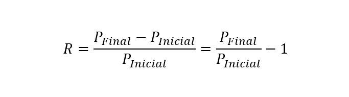
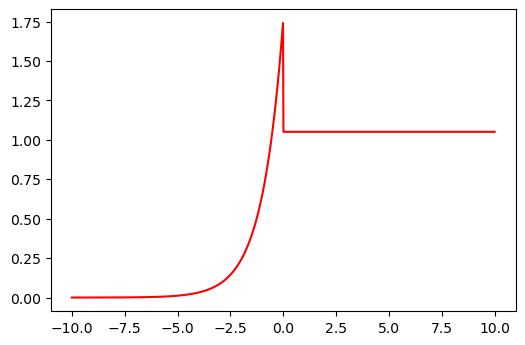
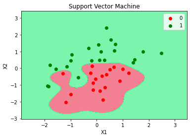
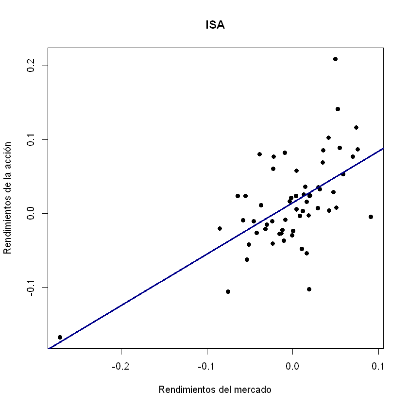
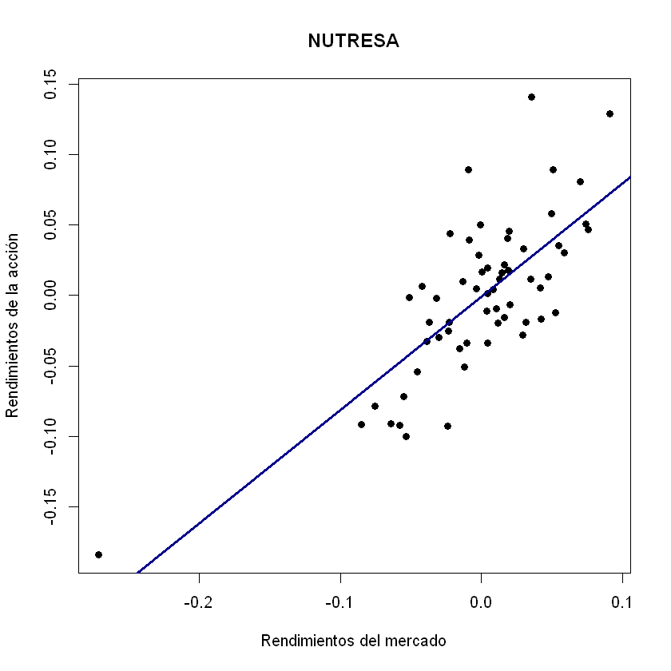
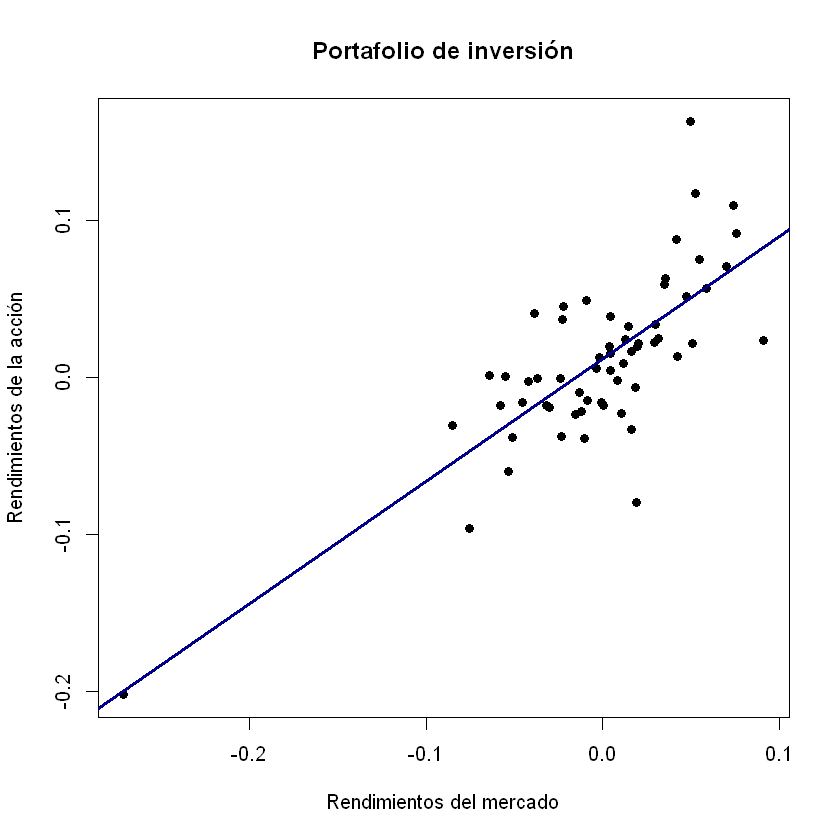
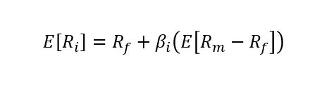
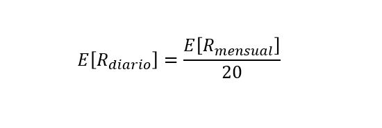
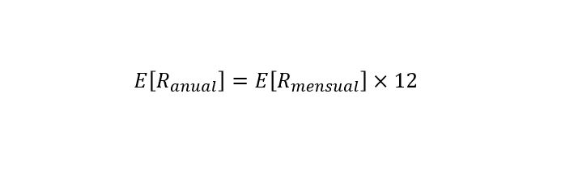

CAPM¶
Se utilizará una base de datos con los precios de cuatro acciones y los puntos del índice COLCAP.
La base de datos es de cinco años con frecuencia mensual. Se tienen 61 precios para poder tener 60 rendimientos mensuales y así tener cinco años en rendimientos.
Los precios fueron descargados de Investing , esta página entrega precios mensuales correspondientes al último día hábil del mes.
Importar datos¶
datos = read.csv("Cuatro acciones 2020 y COLCAP - mensual.csv", sep = ";", dec = ",", header = T)
head(datos)
tail(datos)
| Fecha | ECO | PFAVAL | ISA | NUTRESA | COLCAP | |
|---|---|---|---|---|---|---|
| <fct> | <int> | <int> | <int> | <int> | <dbl> | |
| 1 | mar-15 | 1975 | 1165 | 7430 | 22900 | 1304.62 |
| 2 | abr-15 | 2030 | 1210 | 8000 | 24760 | 1396.35 |
| 3 | may-15 | 1815 | 1280 | 8190 | 22500 | 1306.62 |
| 4 | jun-15 | 1730 | 1275 | 7350 | 22900 | 1331.35 |
| 5 | jul-15 | 1610 | 1240 | 7080 | 22120 | 1317.24 |
| 6 | ago-15 | 1595 | 1180 | 6640 | 19900 | 1246.59 |
| Fecha | ECO | PFAVAL | ISA | NUTRESA | COLCAP | |
|---|---|---|---|---|---|---|
| <fct> | <int> | <int> | <int> | <int> | <dbl> | |
| 56 | oct-19 | 3040 | 1385 | 19500 | 25640 | 1633.15 |
| 57 | nov-19 | 3290 | 1415 | 18980 | 25900 | 1611.92 |
| 58 | dic-19 | 3315 | 1460 | 19600 | 25400 | 1662.42 |
| 59 | ene-20 | 3180 | 1450 | 18800 | 24760 | 1623.83 |
| 60 | feb-20 | 3105 | 1450 | 18600 | 23420 | 1549.61 |
| 61 | mar-20 | 1900 | 897 | 15480 | 19100 | 1129.18 |
Matriz de precios¶
Se tendrá un objeto para los precios de las acciones precios y otro
para el mercado COLCAP.
Los precios de las acciones están entre las columnas 2 y 5 de datos
y el COLCAP está en la columna 6.
precios = datos[, 2:5]
precios = ts(precios)
COLCAP = datos[,6]
COLCAP = ts(COLCAP)
Número de rendimientos¶
numero_precios = nrow(datos)
numero_precios
Matriz de rendimientos¶
Se calcularán los rendimientos aritmético o discretos.

1¶
Matriz de rendimientos para las acciones rendimientos y matriz de
rendimientos para el mercado rendimientos_mercado.
En el numerador de la fórmula están las diferencias de los precios, esto
se hará con diff(precios). El denominador de la fórmula se tiene el
precio inicial, el último rendimiento no tiene en cuenta el último
precio. Se tienen $ n $ precios y $ n - 1$ rendimientos. Se debe
eliminar en el denominador el último precio. Esto se hace eliminando la
última fila con precios[-numero_rendimientos,] para las acciones y
con [-numero_rendimientos] para el índice.
rendimientos = diff(precios)/precios[-numero_precios,]
rendimientos_mercado = diff(COLCAP)/COLCAP[-numero_precios]
Rendimientos esperado de cada acción y del mercado¶
Rendimientos esperados de las acciones rendimientos_esperados y
rendimiento esperado del mercado rendimiento_esperado_mercado.
rendimientos_esperados = apply(rendimientos, 2, mean)
print(rendimientos_esperados)
rendimiento_esperado_mercado = mean(rendimientos_mercado)
rendimiento_esperado_mercado
ECO PFAVAL ISA NUTRESA
0.005071815 -0.001811731 0.014090848 -0.001424590
Volatilidad de cada acción y del mercado¶
volatilidades para las acciones y volatilidad_mercado para el
COLCAP.
volatilidades = apply(rendimientos, 2, sd)
print(volatilidades)
volatilidad_mercado = sd(rendimientos_mercado)
volatilidad_mercado
ECO PFAVAL ISA NUTRESA
0.10455790 0.06560819 0.06064264 0.05643824
Rendimientos del portafolio de inversión¶
rendimientos_portafolio = vector()
for(i in 1:nrow(rendimientos)){
rendimientos_portafolio[i] = sum(rendimientos[i,]*proporciones)
}
Rendimiento esperado del portafolio de inversión¶
rendimiento_esperado_portafolio = mean(rendimientos_portafolio)
rendimiento_esperado_portafolio
Covarianzas entre las acciones y el mercado¶
Se necesita la covarianza de cada acción con respecto al COLCAP.
covarianzas_mercado = cov(rendimientos, rendimientos_mercado)
print(covarianzas_mercado)
[,1]
ECO 0.003498288
PFAVAL 0.002961157
ISA 0.001968475
NUTRESA 0.002277312
Coeficientes de correlación entre las acciones y el mercado¶
Se necesita los coeficientes de correlación de cada acción con respecto al COLCAP.
correlacion_mercado = cor(rendimientos, rendimientos_mercado)
print(correlacion_mercado)
[,1]
ECO 0.6293191
PFAVAL 0.8489371
ISA 0.6105540
NUTRESA 0.7589640
Primera forma de calcular el Beta de cada acción¶
1¶
beta = covarianzas_mercado/volatilidad_mercado^2
print(beta)
[,1]
ECO 1.2376558
PFAVAL 1.0476247
ISA 0.6964248
NUTRESA 0.8056877
Segunda forma de calcular el Beta de cada acción¶
2¶
beta = volatilidades/volatilidad_mercado*correlacion_mercado
print(beta)
[,1]
ECO 1.2376558
PFAVAL 1.0476247
ISA 0.6964248
NUTRESA 0.8056877
Tercera forma de calcular el Beta de cada acción¶
La línea de tendencia entre los rendimientos del mercado y los rendimientos de la acción se obtiene con una regresión lineal, esta línea tendencia es estimada por mínimo cuadrados ordinarios.
En R, la función lm realiza la regresión lineal. Entre los
resultados de la regresión está el intercepto y la pendiente de la línea
recta. El coeficiente Beta es la pendiente de la línea recta.
~ se obtiene con alt + 126.
regresion = lm(rendimientos ~ rendimientos_mercado)
regresion
Call:
lm(formula = rendimientos ~ rendimientos_mercado)
Coefficients:
ECO PFAVAL ISA NUTRESA
(Intercept) 0.0061610 -0.0008898 0.0147037 -0.0007156
rendimientos_mercado 1.2376558 1.0476247 0.6964248 0.8056877
La segunda fila de los coeficientes de la regresión son las pendientes de las líneas rectas estimadas, es decir, los coeficientes Betas de cada acción.
beta = regresion$coefficients[2,]
print(beta)
ECO PFAVAL ISA NUTRESA
1.2376558 1.0476247 0.6964248 0.8056877
Primera forma de calcular el Beta del portafolio de inversión¶
2¶
beta_portafolio = sum(proporciones*beta)
beta_portafolio
Segunda forma de calcular el Beta del portafolio de inversión¶
regresion_mercado = lm(rendimientos_portafolio ~ rendimientos_mercado)
regresion_mercado
Call:
lm(formula = rendimientos_portafolio ~ rendimientos_mercado)
Coefficients:
(Intercept) rendimientos_mercado
0.01153 0.77903
El coeficiente Beta está en la segunda columna, en este caso no la segunda fila porque los coeficientes no es una matriz, es un vector. La matriz salió cuando se hicieron varias regresiones lineales al mismo tiempo como en las acciones.
beta_portafolio = regresion_mercado$coefficients[2]
beta_portafolio
Gráficos¶
Para que en el gráfico salgan puntos se indica que los rendimientos son
numéricos con: as.numeric(rendimientos_mercado) y con
as.numeric(rendimientos[,i]).
for(i in 1: ncol(precios)){
plot(as.numeric(rendimientos_mercado), as.numeric(rendimientos[,i]), xlab = "Rendimientos del mercado", ylab = "Rendimientos de la acción", main = nombres[i], pch = 19)
abline(regresion$coefficients[,i], lwd = 3, col = "darkblue")
}
plot(as.numeric(rendimientos_mercado), as.numeric(rendimientos_portafolio), xlab = "Rendimientos del mercado", ylab = "Rendimientos de la acción", main = "Portafolio de inversión", pch = 19)
abline(regresion_mercado$coefficients, lwd = 3, col = "darkblue")
{kind=link}

{kind=link}

{kind=link}

{kind=link}

{kind=link}

CAPM mensual¶
TES colombiano a 10 años el día 30 de abril de 2020: 6,8% E.A.
Como se está trabajando con rendimientos discretos, se puede utilizar la \(R_f\) en tiempo discreto.
Rf = 0.06916 #E.A.
Rf_mensual = (1 + Rf)^(1/12)-1 #Efectivo Mensual.
Rf_mensual

3¶
CAPM = Rf_mensual + beta*(rendimiento_esperado_mercado - Rf_mensual)
print(CAPM)
ECO PFAVAL ISA NUTRESA
-0.0024172844 -0.0011880925 0.0010835978 0.0003768452
CAPM_portafolio = Rf_mensual + beta_portafolio*(rendimiento_esperado_mercado - Rf_mensual)
CAPM_portafolio
CAPM diario¶
Se debe convertir el rendimiento esperado del mercado a diario y la tasa libre de riesgo a Efectiva Diaria.
Rf_diaria = (1 + Rf)^(1/250)-1 #Efectivo Diaria.
Rf_diaria

2¶
rendimiento_esperado_mercado_diario = rendimiento_esperado_mercado/20
rendimiento_esperado_mercado_diario
CAPM_portafolio = Rf_diaria + beta_portafolio*(rendimiento_esperado_mercado_diario - Rf_diaria)
CAPM_portafolio
CAPM anual¶
Se debe convertir el rendimiento esperado del mercado a anual.

2¶
rendimiento_esperado_mercado_anual = rendimiento_esperado_mercado*12
rendimiento_esperado_mercado_anual
CAPM_portafolio = Rf + beta_portafolio*(rendimiento_esperado_mercado_anual - Rf)
CAPM_portafolio
Beta ajustado¶
3¶
beta_ajustado = 2/3*beta + 1/3
print(beta_ajustado)
ECO PFAVAL ISA NUTRESA
1.1584372 1.0317498 0.7976166 0.8704585
beta_portafolio_ajustado = 2/3*beta_portafolio + 1/3
beta_portafolio_ajustado
CAPM con beta ajustado¶
CAPM = Rf_mensual + beta_ajustado*(rendimiento_esperado_mercado - Rf_mensual)
print(CAPM)
ECO PFAVAL ISA NUTRESA
-1.904869e-03 -1.085408e-03 4.290524e-04 -4.211603e-05
CAPM_portafolio = Rf_mensual + beta_portafolio_ajustado*(rendimiento_esperado_mercado - Rf_mensual)
CAPM_portafolio